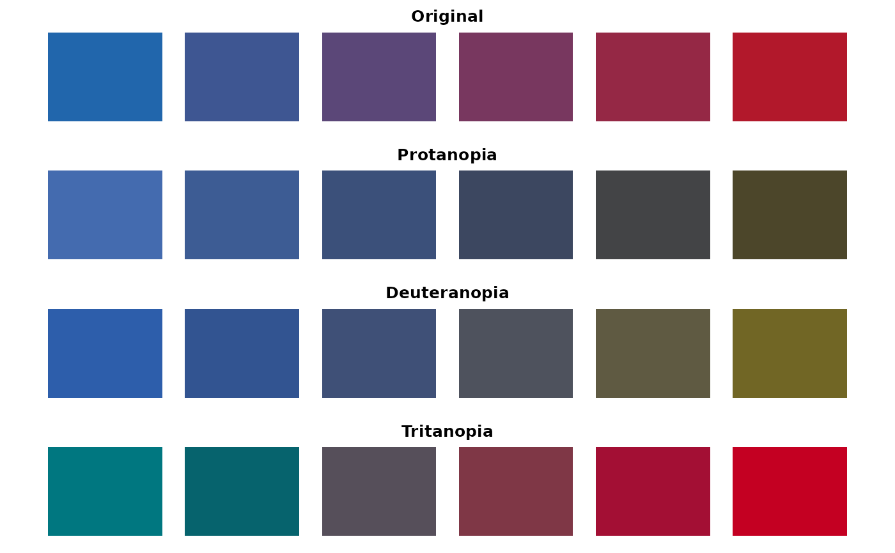

Visualize Colors along with Color Vision Deficiency Simulations
Source:R/visualize_colors_cvd.R
visualize_colors_cvd.RdDisplay a original color palette and the simulated palettes under protanopia, deuteranopia, and tritanopia.
Arguments
- color_palette
A character vector of colors in a format accepted by
grDevices::col2rgb().- cvd_severity
Numeric between 0 and 1 defining the severity of the color vision deficiency.
- show_names
Logical scalar indicating whether names of a named
color_paletteshould be displayed below the color bars. Defaults toTRUE.
Value
Invisibly returns a named list containing the original colors and their simulated appearance under protanopia, deuteranopia, and tritanopia.
Details
Color vision deficiencies are simulated using the transformations implemented by the colorspace package.
The function produces four horizontal color-bar plots showing the original
colors and their appearance under the three simulated color vision
deficiencies. If a named color_palette is provided and show_names = TRUE,
the color names are displayed below the corresponding color bars
Examples
color_palette <- create_color_range(c("#2166AC", "#B2182B"), 6)
visualize_colors_cvd(color_palette)
